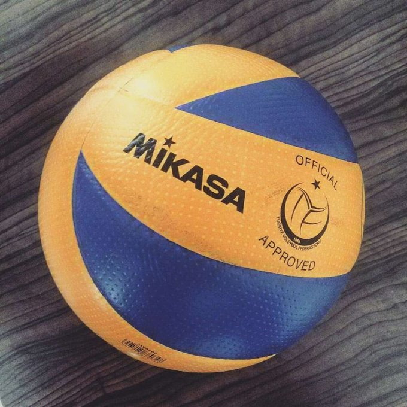
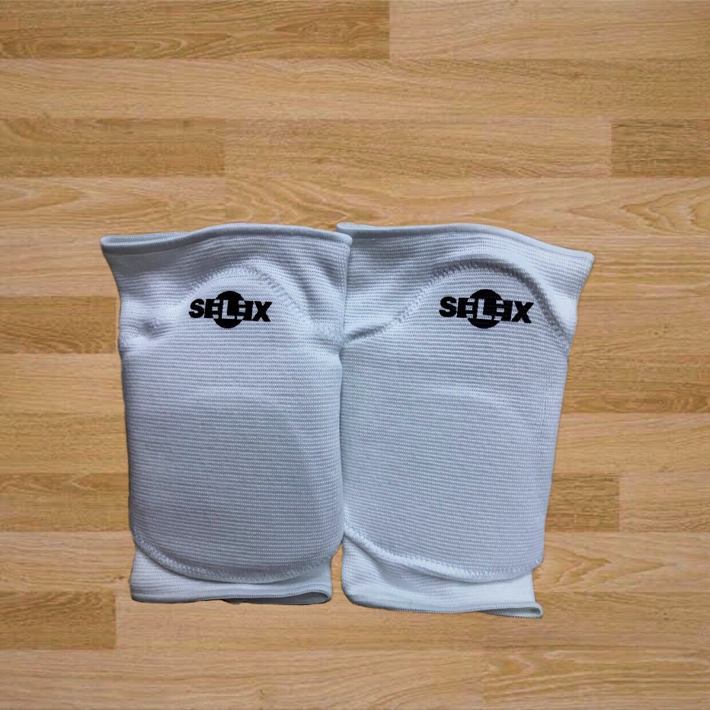
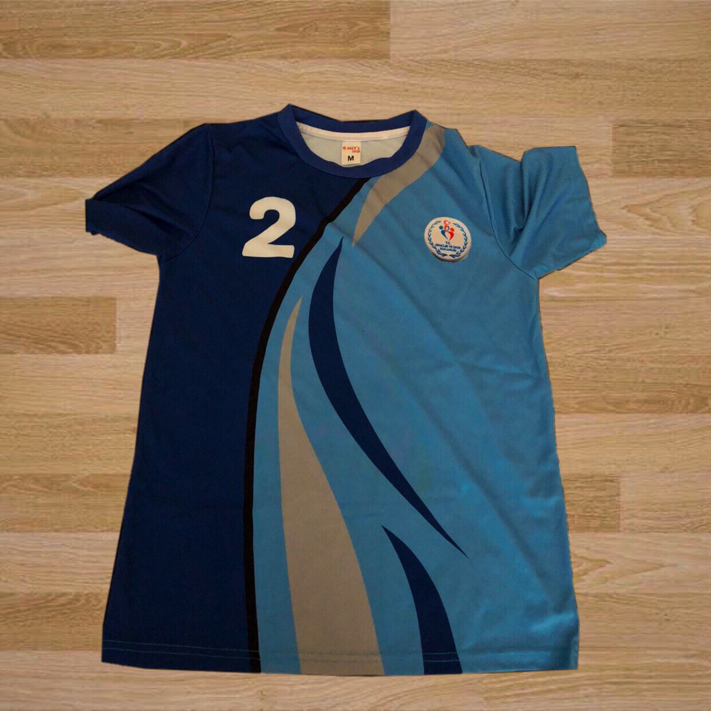

VOLEYBOL SPORU
VOLEYBOL SPORU
EKİPMANLAR
 Voleybol Filesi:
Voleybol Filesi:File, orta çizginin üstünde ve buna dik olarak yer alır; erkekler için 2.43 m. ve bayanlar için 2.24 m. yüksekliğindedir. Filenin yüksekliği oyun alanının ortasından ölçülür. Filenin iki kenar yüksekliği kesinlikle aynı olmalı ve buradaki yükseklik kuralda belirtilen yüksekliği 2 cm’den fazla geçmemelidir.
 Voleybol Topu:
Voleybol topu özel standartlara sahiptir. Top içerisinde lastik veya benzeri maddeden bir kese bulunur ve deri veya sentetik deriden yapılır. Küresel bir şekli olan voleybol topunda tek açık tonda bir renk veya renk kombinasyonu kullanılabilir. Voleybol topunun çevresi 65-67 santimetre, ağırlığı ise 260- 280 gr olarak belirlenmiştir.
 Voleybol Ayakkabısı:
Voleybol Ayakkabısı:Voleybol ayakkabısı hafif ve esnek olmalıdır. Tabanları plastik veya benzeri malzemeden üretilmiş olup topuksuz olması gerekmektedir. Hafif, esnek ve rahat ayakkabıların tercih edilmesi önerilir.
 Voleybol Dizliği:
Oyuncuların dizlerini korumak için kullandıkları ekipmandır. Ortası açık dizlik ya da kapalı dizlikler tercih edilebilir. Esnek ve yumuşak malzemeden üretilen dizlikler bacağı sıkmamalıdır.
 Voleybol Forması:
Erkekler forma seçiminde vücudu saran kısa kollu forma giyerler. Kadınlarda ise voleybol forması kolsuzdur. Forma giyilmesi zorunlu bir kıyafettir. Takımın bir forması olmalıdır. Aynı renk ve aynı desende formalarda hem önde hem arkada sporcunun numarası yazılı olmalıdır. Ayrıca kaptanlar için belli işaretler formada bulunmalıdır. Takım kaptanlarının ön kısımda bulunan göğüs numarasının altında 8x2 santimlik şerit olmalıdır. Numaraların rengi formanın rengine zıt olmalıdır. Formalar 1’den 8’e kadar sıralı olmak zorundadır.
 Voleybol Şortu:
Voleybol Şortu:Erkekler voleybol şortu giyerler. Şortun rengi ve tasarımı takımın diğer oyuncuları ile aynı olmalıdır. Şortun sağ paçasında sporcunun forma numarası tekrarlanmalıdır. Kadınlar voleybol şortu yerine tayt tercih ederler. Kadın voleybol taytı kumaştan ve likralı olmalıdır. Kadınlar için tayt voleybol hareketlerini yapmada gerekli esnekliği sağlar.